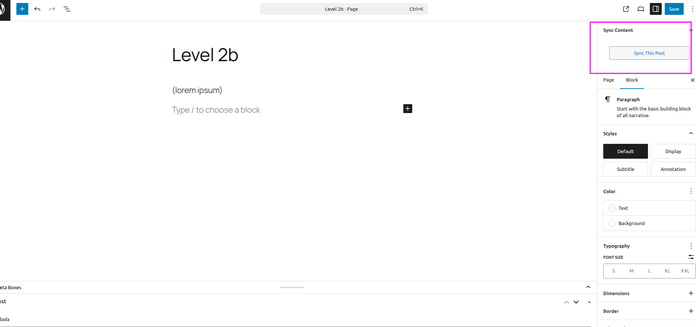
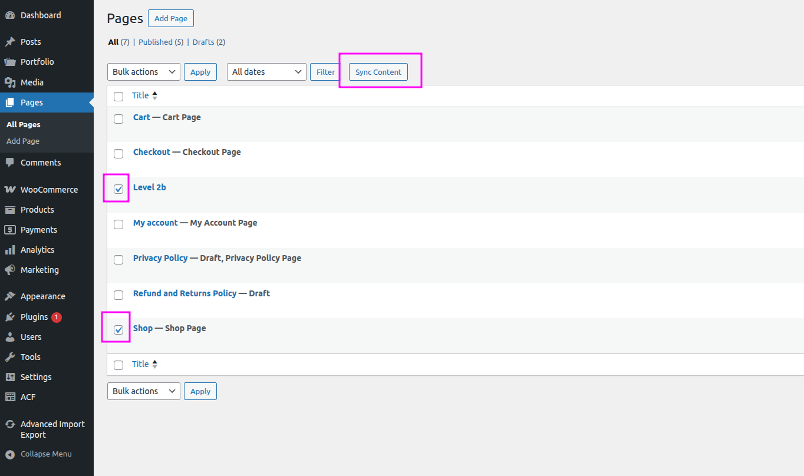

🔄 Content Synchronisation Between Sites
Connect two or more WordPress sites with a secure API key and sync posts, pages, custom post types, and media bidirectionally — without exporting a single file.
Overview
The Content Sync feature establishes a secure API connection between WordPress sites. Once connected, you can Pull content from a remote site or Push content to a remote site — perfect for keeping staging, development, and production environments in sync.
Pull
Fetch selected posts from a remote site and import them.
Push
Send selected posts to a connected remote site.
Media Sync
Automatically download and attach media files referenced in synced content.
Setting Up a Connection
Step 1 — Get Your Site API Key
On each WordPress site, navigate to Import Export by RockStarLab → Content Sync. The plugin generates a unique 64-character API key for your site. Share this key with the administrator of the remote site so they can connect to you.

Step 2 — Add a Connected Site
On the Content Sync screen, click Add Site and fill in the form:
| Field | Description |
|---|---|
| Site Name | A friendly label for the connection (e.g., "Production", "Staging"). |
| Remote URL | The full URL of the remote WordPress site (e.g., https://example.com). |
| API Key | The 64-character API key obtained from the remote site's Content Sync screen. |
After saving, click Test Connection to verify the credentials are valid.

Syncing Content
There are two ways to trigger a sync — directly from the post editor, or in bulk from the posts list screen.
Option A — Sync a Single Post from the Editor
Open any post or page in the WordPress editor. In the sidebar on the right, locate the Sync Content button and click it.

Option B — Sync Multiple Posts from the Posts List
Navigate to the posts list screen (e.g., Pages or any custom post type list). Select one or more posts using the checkboxes, then click the Sync Content button that appears above the list.

Step 2 — Choose Site and Direction
In both cases, a Sync Content dialog will appear. Select the connected site you want to sync with, then click one of the two action buttons:
- Push to Site — send the selected post(s) to the remote site.
- Pull from Site — fetch and import the matching post(s) from the remote site.